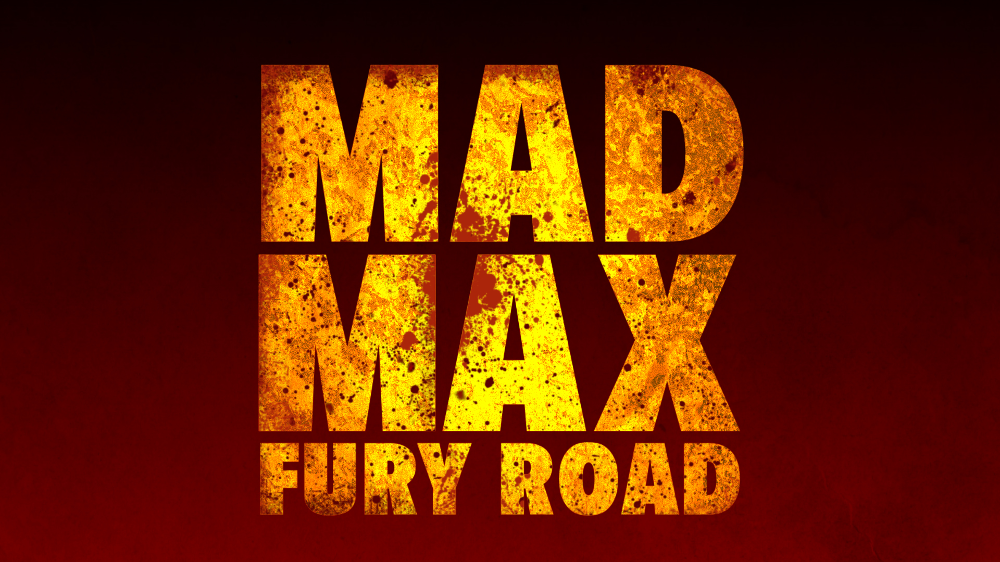
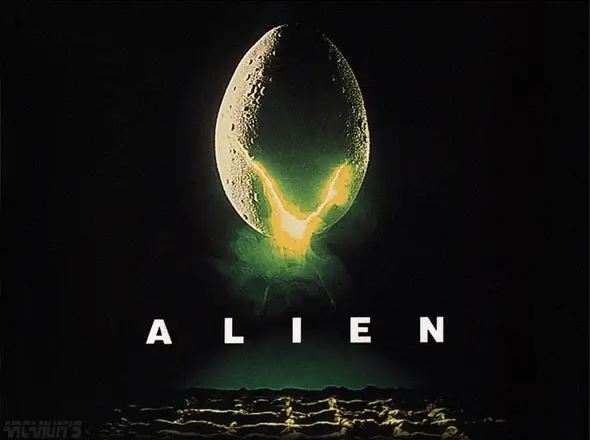

I enjoy this zombie thriller as it is a hopeful protagonist in a bleak setting. It pits multiple values against each other, and how it plays out is gory and beautiful.
Stunning visual story, that uses a visual medium to tell a weird and bizarre story and the desperate people in the post apocalypse.
A masterpiece of horror storytelling where no character makes bad decisions. The protagonists are up against seemingly insurmountable odds, and an unkown corporate interest. The survival of man vs a species that is only intent on killing, shows what true human character and perseverence really is.